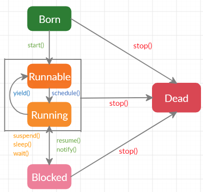

What is Thread ?
Thread is a concept where a program can be divided into subprograms & execute them in parallel.
Java allows us to create multiple threads which improves the overall speed of program execution.
Every thread has its own stack, program counter & Memory space associated to it.
Using threads multitasking & responsive GUI application can be possible.
Creating Thread:
Threads can be created by two ways:
- By extending Thread Class
- By implementing Runnable Interface
Thread Life Cycle:
A thread goes through different life cycle states, they are:
- Born
- Runnable
- Running
- Blocked
- Dead

Lets learn more about life cycle threads:
Born state:
Creating a new thread object is said to be in born state.
From this state a thread can go to running state with the start() method or it can go to Dead state with stop() method.
Runnable state:
It is the state where different threads ready to be executed are waiting in a queue.
Threads switch between runnable & running state depending up on Thread Priority and availability of the processor.
Running State:
It is the state where thread is in execution.
From this state a thread can go to Runnable state by yield() method.
A running Thread goes to blocked state with suspend() , sleep() and wait() method.
or can go to Dead state with stop() method.
Blocked State:
A thread is in blocked or idle state where it is waiting for certain condition to be fulfilled to reenter the runnable or running state.
The notify() and resume() methods are used to reenter in running state.
or it can go directly to dead state with stop() method.
Dead State:
A Thread ends its life cycle in Dead state.
A thread goes to dead state after it has executed its run() method.
or it can forcibly lead to dead state from any of the above states by using the stop() method at any point of time.
Thread methods:
Thread has several methods to transit between different states & also to perform various operations on them.
Some of the useful methods are:
| Method | Operation |
|---|---|
| start() | Starts the thread by calling it's run method |
| run() | This method contains statements to be executed by the thread |
| yield() | Running thread goes to Runnable state |
| schedule() | Runnable thread goes to Running state |
| suspend() | Thread goes to blocked state until recall |
| resume() | Resumes execution of the suspended thread |
| sleep() | Thread blocked for specified amount of time |
| wait() | Thread blocked until certain condition occurs |
| notify() | Resumes thread execution from sleep state |
| notifyall() | Resumes execution of all threads from sleep state |
| stop() | Thread goes to Dead state |
| setPriority() | Sets a priority for the thread |
| getName() | Returns the name of the thread |
| isAlive() | Returns boolean value if the thread is still running |